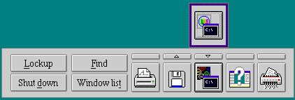

The Toolbar is a convenient area for users. It provides them with a place to get fast access to their frequently used objects and Desktop actions. In addition to placing objects on the Toolbar, users may place objects in drawers. A drawer is represented by the little button above an object on the Toolbar, as shown in the following figure:
The button of an open drawer contains a downward pointing arrow. The button of a closed drawer contains a upward pointing arrow. As shown in the above figure, the drawer above the OS/2 Window object is open and contains the DOS Window object.
While there is no restriction on the content of the drawer, its most logical function is to hold objects that are either related or similar to the object on the Toolbar but are less frequently used.
There is no limit to the number of Toolbars that may exist in the system. The system Toolbar is defined as the one with an OBJECTID of <WP_LAUNCHPAD>. When the user double clicks the select button on a folder (or Desktop background space) the Workplace Shell looks for the system Toolbar. For example, you can configure a different Toolbar for a work area, so that each time that work area is opened, its Toolbar is opened.